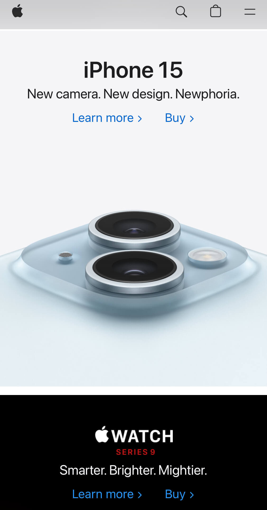
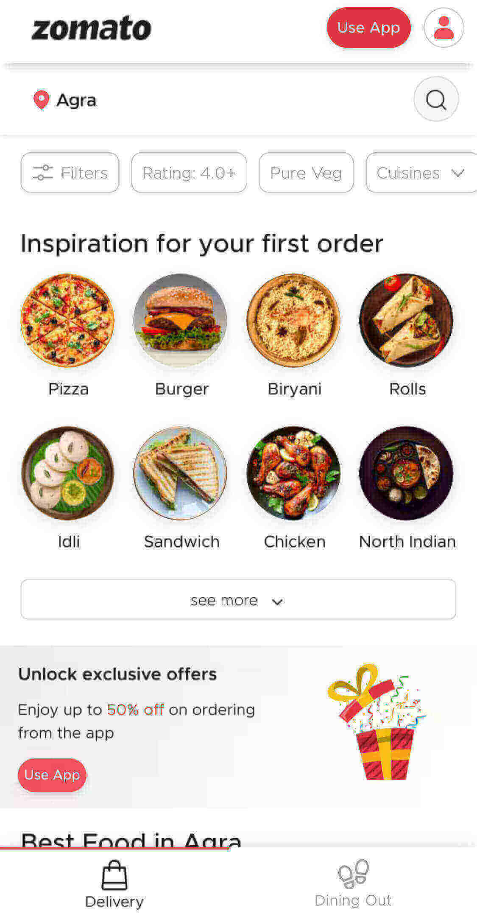
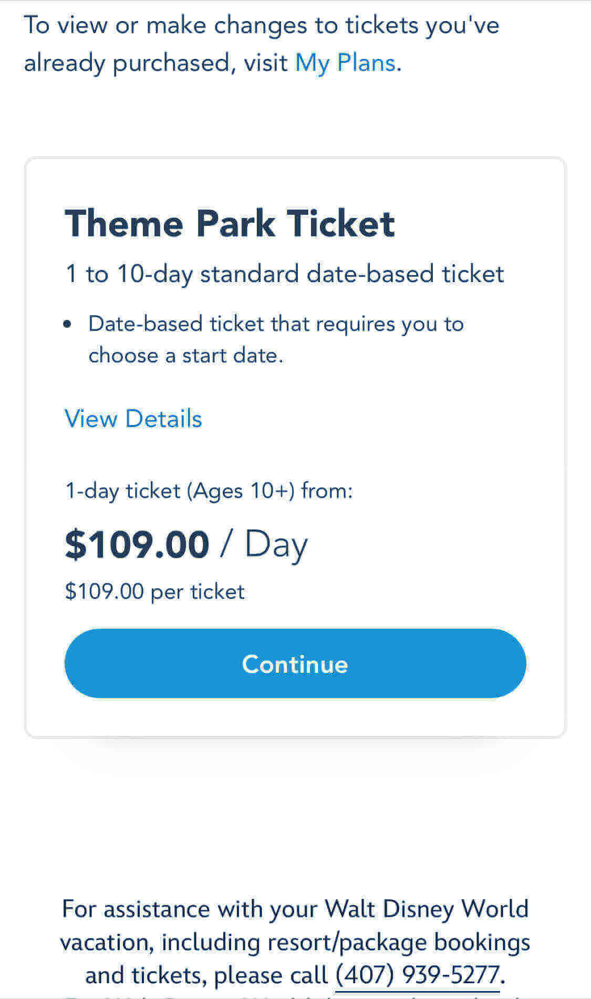

White Space and Clean Design
Apple
https://www.apple.com/ White space in a website correlates to a minimalistic design. By integrating white space into your website shows the user can only focus and see one item at a time. It also helps with no distractions. It can give a sense of balance to your website if it is used properly. Benefits of white space is increased comprehension, highlight and isolate important elements, and creates a tidier and more user friendly design. With Apple's website you can see the massive amounts of white space to represent elegance and class while having the user only focus on one item at a time.
Hick's Law
Zomato
https://zomato.com/ Hick's law states that the time to make a decision increases with the number and complexity of choices present. The more choices that are available to you the longer it will take for you to come to a decision. Hick's law helps users simplify their decision making process while not completely removing it. This also helps to direct users to functions of top priority, better conversion rates, and ensure that the user does not get confused on a page. With online food ordering websites, like Zomato, it gives the user broad categoriesof food to choose from. This design of the website allows users to quickly decide on food that looks appealing.
Fitt's Law
Disney World
https://disneyworld.disney.go.com Fitt's law is a predictive model of human behavior. The law states that the futher away a target is and the smaller the size of the target, the longer it takes for a user to aquire it. In other words its the amount of time required for a person to move a pointer to a target area. An example is when you are trying to purchase something, like tickets for Disney World, it is best to make the "purchase", "add to cart", or "continue" button large and quick to find. The primary of users on sites such as Disney tickets page is to purchase so making that target button the easiest to find will help the website.